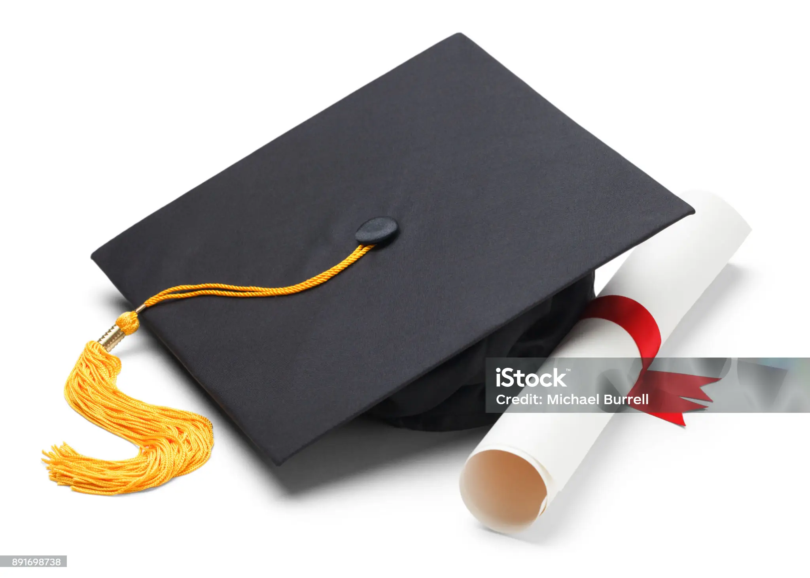
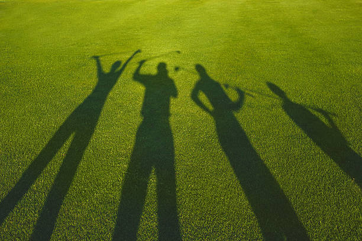
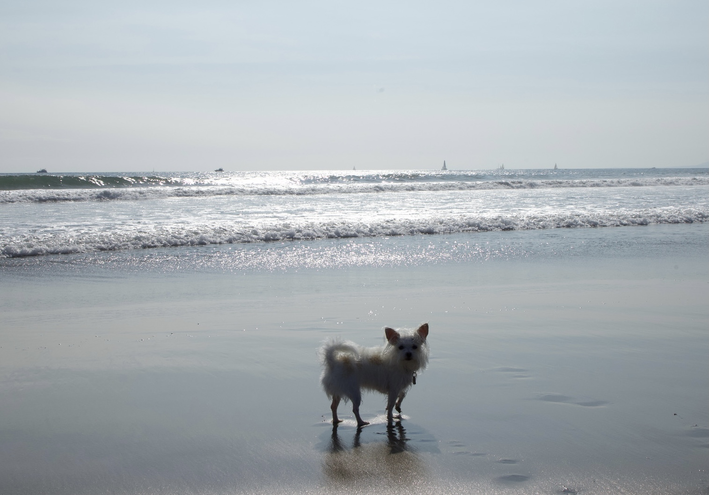

What I Have Achieved So Far:
Here are some of the key achievements that reflect my growth and dedication over the years:
-
Leaning Enghish
Studying English at LWTech transformed my communication and my future, and I invite others to explore the opportunities it offers
-
Adapting to a new culture

-
Earning a Bachelor's degree in Business Administration, Accounting
Choosing the University of Washington Bothell (UWB) was a powerful step in my journey to grow, learn, and shape my future.
 -
Finding a full-time job

-
Continuing my Master's degree while working full time
I continued my master’s journey at UWB while working full time, pushing myself to grow both professionally and academically, and I strongly recommend the experience.
-
Being a wife and a mother of two childen at the same time
 -
01 assignment in HTML100 class
link
